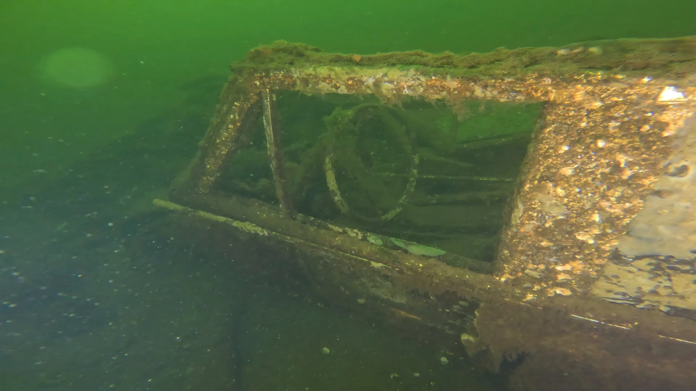

The story behind the Shipwreck City project and volunteer team making it happen.
Shipwreck City is an ongoing effort to document, photograph, and share the sunken vessels and debris resting on the floor of Lake Union — one of Seattle's most beloved waterways.
This lake has been part of the homelands of the Duwamish Tribe for thousands of years, who used these waters for travel, fishing, and daily life long before the city was built.
In the late 1800s, after the arrival of Euro-American settlers, Lake Union became a working waterway for industry, travel, and recreation. Its bottom holds a remarkable record of the past: a hidden landscape shaped over time as vessels and debris collect on the lakebed.
Many of these submerged sites are unknown to the people who swim, paddle, sail, and fly above them each day. Shipwreck City brings this hidden world into view. By creating a visual archive of each site, the project shows how the lake continues to evolve. It invites us to think about preservation, pollution, and our shared responsibility to care for urban waterways.
Through photography, video, and research, we aim to make these underwater stories accessible while encouraging deeper connection to Lake Union and its connected waterways.
Phil Parisi is the project lead and unmanned systems pilot. A robotics researcher and Seattle rookie, Phil embraces Lake Union and the surrounding waters through sailing, scuba diving, and paddle boarding. The existance of 'unknown' lakebed targets in his new backyard drove him to start Shipwreck City. Phil holds a Masters Degree in Ocean Engineering from the University of Rhode Island and previously work for U.S. National Laboratories.
Libbie Barnes is the associate curator of exhibits and enagement lead at MOHAI. Her background in Maritime Studies and eight years working in museums brings key historical perspectives and community connections, which elevates this project to new levels. Libbie holds a Masters Degree from the University of Washington in Museum Studies.
Evan Weber serves as Shipwreck City’s Digital Archivist, helping transform underwater discoveries into an accessible public archive. With a background in archaeology, museum studies, and public history, he reviews dive records and historical sources and develops public-facing overviews that make Lake Union’s submerged history easier to search, understand, and share. Evan holds a Master’s Degree in Museum Studies from Johns Hopkins University and is passionate about preserving cultural heritage by uncovering the human stories behind artifacts and bringing them to life through research, storytelling, and interpretation.
Captain George Spano is an experienced boat captain, fisherman, and ocean conservationist. His interest in marine robotics lead to his involvement as a boat captain for ROV deployments around the Puget Sound.
Shipwreck City stands on the shoulders of two significant prior efforts. Ben Griner of Coastal Sensing and Survey (CSS) conducted a comprehensive side-scan sonar survey of Lake Union c. 2017 — the first known survey to produce an encompassing record of submerged targets with measured dimensions. His work established the baseline map of what rests on the lakebed.
Dan Warter and the DCS Films team, independent of CSS, scuba dived a number of shipwrecks c. 2010-2020 and obtained the video footage that constitutes the majority of historical video footage to date. Their underwater documentation brought Lake Union's wrecks into the public eye and was featured the Lake Union Virtual Museum project.
Additionally, many other organizations and researchers have studied Lake Union's maritime history and contributed to the information available in the public domain.
When comparing the CSS and DCS datasets, the number of total CSS targets (~100) greatly exceeds the number of wrecks filmed (~50). The Shipwreck City project was established as a means to fill that gap. Our role is to consolidate disparate historical data sources, capture high resolution video of each target using ROVs, and republish the updated underwater archive in a consolidated location.
Target locations are obtained via CSS side scan surveys, other records, or word of mouth. Then, an ROV equipped with a side scan sonar is deployed at the site. The ROV first scans the nearby area to locate the target, then swims closer to film the wreck. Attempts are made to find any identifying criteria (e.g. hull names, registration number) and fully capture all aspects of the target. We do not disturb the wrecks or remove artifacts; great care is taken to neither disturb the target itself nor the environment. After each dive, data is cross-referenced with existing sources, the archive is updated, and images uploaded. All data is made publicly accessible as it is acquired, with field work planned throughout 2026.
Upon completition of discrete areas, the team will corroborate the dataset's details with local historians to confirm consistency and accuracy. Shipwreck City takes all measures to issue errorless datasets, but this cannot be guranteed.
ROV Platform: Blue Robotics BlueROV2 with Heavy Add-on. 8 thrusters, 4 lumen lights, and the Newton Gripper. BlueOS, Cockpit for piloting. Built on the Ardupilot Ardusub stack.
Sensors: port-mounted Cerulean Sonar 450kHz FS450.
Video: 4K 30fps GoPro Hero12. On-board 1080p for live piloting. Insta360 X2 for creative shots. Drone footage with DJI Mini Pro 4.
We are currently focused on Lake Union and the connecting waterways. Future phases may expand to Lake Washington, and greater Puget Sound. If you have information about a wreck not in our archive, we want to hear from you!
If you would like to support Shipwreck City — whether through dock access, a letter of support, vessel time, financial support, or a connection in the community — we would love to hear from you.
Lake Union & Connecting Waterways
Seattle, Washington
47°37'N 122°20'W
We are moved by the generosity of the community. Every donation moves the archive forward.
Support the Project →
Plain HTML/CSS/JS
Leaflet.js (maps)
CartoDB dark tiles
Hosted on GitHub Pages